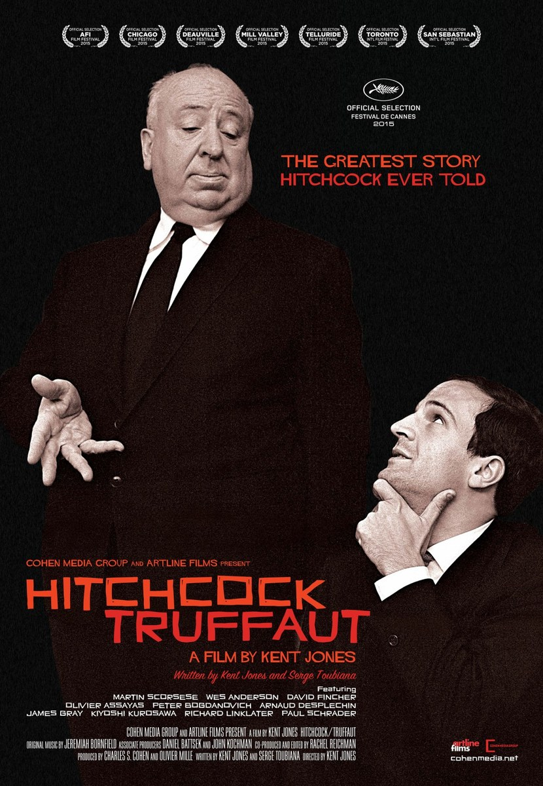

Fiche technique
- Titre
- Hitchcock/Truffaut
- Réalisation
- Kent Jones
- Scénario
- Kent Jones et Serge Toubiana1
- D'après
- Le Cinéma selon Hitchcock, livre d'entretiens de François Truffaut (1966)
- Montage
- Rachel Reichman11
- Musique
- Jeremiah Bornfield11
- Narration
- Bob Balaban1
- Avec
- Martin Scorsese, David Fincher, Wes Anderson, Olivier Assayas, Peter Bogdanovich, Arnaud Desplechin, James Gray, Kiyoshi Kurosawa, Richard Linklater, Paul Schrader1
- Durée
- 80 minutes1
- Première
- 19 mai 2015, Cannes Classics (salle Buñuel, 15 h 30)6
- Sorties
- 2 décembre 2015 (États-Unis)1 ; décembre 2015 (France)
- Distinction
- Maysles Brothers Award du meilleur documentaire, 38e Denver Film Festival1
- Recettes
- 302 459 $1

Synopsis
En juin 1962, François Truffaut écrit à Alfred Hitchcock pour lui proposer une semaine d'entretiens ininterrompus sur l'ensemble de sa carrière. Hitchcock répond par télégramme et fixe le rendez-vous au 13 août 1962, dans son bureau d'Universal Studios, alors qu'il achève la post-production des Oiseaux4. Truffaut fait venir Helen Scott, du French Film Office de New York, qui traduit en direct ; les magnétophones tournent huit jours durant, sur une cinquantaine de films. De cette semaine naîtra, quatre ans plus tard, Le Cinéma selon Hitchcock.
Le film de Kent Jones part de ces bandes. Il en diffuse de longs extraits — les deux voix, celle de Scott entre les deux — sur les images des films discutés, y mêle photographies de plateau, archives et documents, et convoque dix cinéastes d'aujourd'hui pour dire ce que ce livre leur a fait. La dernière partie s'immobilise sur trois titres : Le Faux Coupable, Vertigo et Psychose7.
Contexte de production
Kent Jones n'arrive pas à ce sujet en touriste. Critique passé par Film Comment, dont il devient editor-at-large, correspondant des Cahiers du cinéma, collaborateur de Artforum et Cinema Scope, il entre en 1998 à la Film Society of Lincoln Center, siège au comité de sélection du New York Film Festival à partir de 2002 et en prend la direction en 2013, poste qu'il occupe encore à la sortie du film9. Il a déjà signé Val Lewton: The Man in the Shadows (2007) et coréalisé A Letter to Elia (2010) avec Martin Scorsese9 : Hitchcock/Truffaut est présenté à Cannes comme son quatrième film6. Le scénario est cosigné par Serge Toubiana, ancien rédacteur en chef des Cahiers et alors directeur de la Cinémathèque française5 — c'est-à-dire par un héritier direct de la maison d'où Truffaut est parti.
La matière première
Le film repose sur un matériau d'archive dont le volume exact varie selon les sources : la présentation officielle de Cannes annonce « trente heures » de conversations enregistrées6, tandis qu'un dossier documentaire consacré au livre chiffre les sessions d'août 1962 à environ vingt-six heures de bande, dont onze heures et demie montées seront diffusées à la radio française pour le centenaire Hitchcock en 19994. Le point commun de toutes les versions : une semaine complète, un seul bureau, deux hommes et une interprète.
Les chiffres circulant sur ces entretiens (vingt-six, trente, voire cinquante heures) ne concordent pas d'une source à l'autre, selon qu'on compte la bande brute, les sessions utilisables ou l'ensemble des rencontres ultérieures — dont une seconde entrevue à Londres en juillet 19664. Cette analyse retient la fourchette plutôt qu'un chiffre unique.
Quatre ans entre la bande et le livre
Helen Scott ne se contente pas de traduire : elle transcrit puis traduit intégralement les bandes en français, après quoi Truffaut et elle passent quatre ans à réduire et réécrire la matière dans les deux langues simultanément4. L'édition française paraît en 1966 sous le titre Le Cinéma selon Hitchcock ; l'édition anglaise augmentée, Hitchcock/Truffaut, suit en 1967, mise à jour après la rencontre londonienne de 1966. Après la mort de Hitchcock en 1980, Truffaut donne une troisième version, avec nouvelle préface et chapitre final sur les derniers films4 — celle que la plupart des lecteurs francophones connaissent sous sa réédition de 19835.
Structure narrative
Le film n'a pas de récit à proprement parler : il a un montage. Jones y a d'ailleurs pensé contre le genre auquel il appartient. « Je ne voulais que des cinéastes. Je n'étais pas intéressé par le fait de faire un documentaire », déclare-t-il3 — formule qui dit l'ambition : non pas retracer une histoire, mais prolonger une conversation entre praticiens.
La construction procède par alternance : extrait sonore de 1962, images du film discuté, intervention d'un cinéaste contemporain, retour à la bande. Le procédé, remarquablement fluide au premier abord, est aussi ce qu'on lui a le plus reproché : une critique française relève une trentaine de séquences où chaque intervenant ne revient que deux ou trois fois, au point que le fil des propos originaux se perd2. La même objection revient côté américain sous une autre forme — un premier tiers jugé « lent et pédant », d'un niveau élémentaire pour qui connaît déjà les deux hommes7.
Le film ne trouve son régime propre que lorsqu'il renonce au panorama : dans le dernier mouvement, il s'installe longuement sur trois titres, et c'est là que les commentaires cessent d'illustrer pour analyser — la contribution de David Fincher sur Vertigo, qui voit dans le film quelque chose de « perverti », sorti tel quel de l'inconscient de Hitchcock, y est tenue pour la plus pénétrante du lot7.
Ouvrir par une image, pas par une archive
Le choix d'ouverture est révélateur de la méthode. Jones commence par une séquence de Sabotage (1936) plutôt que par des documents d'époque, expliquant qu'il tenait à « partir des images que Hitchcock avait lui-même construites », parce que ces images-là « ont tendance à écraser tout le reste »3. Un film sur un livre d'entretiens commence donc par un plan de cinéma muet de commentaire : la thèse est posée avant la première phrase.
Mise en scène et procédés techniques
Le dispositif tient en trois matières : la bande, le photogramme, le visage parlant.
La bande. Elle est la seule chose que le film possède en propre — les images de Hitchcock appartiennent à Hitchcock, les commentaires aux commentateurs, mais le grain de ces voix de 1962, l'accent de Truffaut, la diction posée de Hitchcock et la présence constante de Helen Scott qui traduit entre eux, cela n'existe nulle part ailleurs10. Jones ne la traite jamais comme un simple commentaire off : la bande porte le film, et l'image vient s'y ajuster.
Le photogramme. Le film procède par extraits annotés, la parole désignant précisément ce que l'œil doit voir. C'est la forme même du livre — un livre où l'on demande au cinéaste pourquoi ce plan est à cette place — transposée au montage : les extraits ne sont pas illustratifs mais démonstratifs.
Le visage parlant. Dix cinéastes filmés en entretien classique. Le choix a été assumé contre celui, plus attendu, des historiens et des critiques : Jones voulait « seulement des cinéastes »3. Le prix à payer est celui de tout film de talking heads : une part du travail est déléguée à l'autorité de qui parle.
Ce que Hitchcock appelle le suspense
Le film s'attarde sur le point de doctrine central : le suspense comme économie de l'information, la maîtrise de ce que le personnage voit et de ce que le spectateur sait. Jones le formule à propos de Vertigo : si l'on avait vu le visage de Madeleine ou entendu sa voix dans la première partie, « l'impact aurait été dissipé »3. La leçon de mise en scène ne porte donc pas sur ce qu'on montre, mais sur ce qu'on retient.
Réalisé pour environ 800 000 dollars, avec l'équipe de sa série télévisée, le film est discuté dans le livre comme un problème purement technique : combien de plans pour une scène de douche, et selon quel ordre. Le documentaire suit ce fil et fait de la séquence un cas d'école2.
Figures principales
Alfred Hitchcock, 63 ans
Le film le saisit à un moment précis : celui où il est mondialement célèbre et critiquement méprisé — l'homme de télévision, l'amuseur. Ce que la bande fait entendre, c'est un artisan qui parle technique sans jamais parler d'art, et dont l'intuition, selon Jones, reste entièrement arrimée aux pratiques du système des studios3. Le film montre aussi, par touches, ce que le livre laisse affleurer : l'angoisse, la culpabilité transférée (Le Faux Coupable), la dimension apocalyptique et religieuse des Oiseaux2.
François Truffaut, 30 ans
Deux fois plus jeune que son interlocuteur2, Truffaut vient de la critique et y a laissé des formules assassines — celle, souvent citée, selon laquelle le plus mauvais film de Hitchcock l'intéresse davantage que le meilleur film de Jean Delannoy2. Son projet n'est pas l'hommage : c'est une opération de sauvetage critique — libérer Hitchcock de sa réputation d'amuseur2. Jones le décrit comme le pôle analytique du duo, conscient de ce qu'il fait quand il fait du cinéma, là où Hitchcock reste intuitif et pragmatique3. Après 1962, les deux hommes s'écrivent et se téléphonent constamment ; Truffaut mourra à 52 ans, quatre ans après Hitchcock2.
Helen Scott, la troisième voix
Elle est la grande absente des commentaires et la présence continue de la bande. Sans elle, aucun des deux hommes ne comprend l'autre : elle traduit en direct, transcrit, retraduit, puis travaille quatre ans au montage du texte4. Les extraits sonores diffusés par ailleurs la créditent explicitement comme traductrice10. Le film l'entend beaucoup et l'examine peu — un déséquilibre qui, avec le recul, en dit long sur la manière dont l'histoire du cinéma range ses médiateurs.
Les dix héritiers
Scorsese, Fincher, Anderson, Assayas, Bogdanovich, Desplechin, Gray, Kiyoshi Kurosawa, Linklater, Schrader1. Chacun apporte un angle : Fincher les inventions techniques, Scorsese la manipulation du spectateur, Anderson la précision graphique, Assayas un cinéma qui prend conscience de lui-même, Desplechin la terreur proprement hitchcockienne2. Aucune femme, aucun cinéaste non occidental hormis Kiyoshi Kurosawa : le point sera relevé partout (voir bande 8).
Thèmes
1. Un livre comme permission
Le thème le plus net n'est pas Hitchcock : c'est l'effet du livre. Pour Fincher, sa découverte fut une révélation ; pour Scorsese, la fin de la « dictature de l'establishment » décidant seul de ce qui compte comme cinéma légitime2. Jones va plus loin : le livre a donné à toute une génération l'autorisation de « laisser tomber la mystification » et de chercher sa liberté à l'intérieur des systèmes existants3. L'ouvrage n'a pas seulement décrit une pratique — il en a rendu une autre pensable.
2. La promotion d'un artisan au rang d'artiste
L'enjeu de 1962 est un enjeu de légitimité. Le livre a fait passer Hitchcock du statut de divertisseur populaire à celui d'artiste que l'on ose comparer à Kafka ou Dostoïevski8 ; Toubiana pousse la comparaison jusqu'à Picasso et Duchamp, et rappelle la formule qui résume l'héritage : « ce livre a été fondateur : on a appris la mise en scène à travers le regard d'Hitchcock »5. C'est un des moments décisifs du débat sur la politique des auteurs, où s'affrontent alors Andrew Sarris et Pauline Kael8.
3. La technique comme morale
Ce que la bande enregistre, c'est un homme qui refuse de parler autrement qu'en termes de découpage, de focale et de durée — et qui, ce faisant, livre plus sur ses obsessions que n'importe quelle confession. Le film montre que la question « combien de plans ? » est chez Hitchcock une question d'éthique du spectateur : de quoi le rend-on complice, à quel moment, et à quel prix.
4. La cinéphilie comme filiation
Le film organise une chaîne : Hitchcock parle à Truffaut, Truffaut écrit pour ses pairs, les pairs deviennent Scorsese et Fincher, qui parlent à leur tour face caméra. Cannes l'avait perçu en présentant l'objet comme un hommage à un « acte pionnier de cinéphilie, de critique et de culte des ancêtres vivants ». La générosité de ce geste est réelle ; sa clôture aussi — une chaîne, par définition, se transmet entre semblables.
5. Ce qu'un panthéon laisse dehors
Le thème n'est pas dans le film : il naît de lui. En composant en 2015 un aréopage exclusivement masculin, le documentaire reconduit sans le dire la géographie critique de 1962. Ce n'est pas un détail de casting : c'est la démonstration involontaire que la canonisation entreprise par Truffaut a produit, en même temps qu'une libération, un club.
Réception critique et postérité
L'accueil a été largement favorable : 95 % d'avis positifs sur 110 critiques recensées par Rotten Tomatoes (moyenne 7,7/10), 79/100 sur Metacritic pour 25 critiques1. Le film a reçu le Maysles Brothers Award du meilleur documentaire au 38e Denver Film Festival1, pour une exploitation en salles modeste (302 459 dollars de recettes1) — chiffres cohérents avec un objet de cinéphiles.
Les réserves
- Un club d'hommes. L'absence totale de réalisatrices est relevée comme anachronique pour 2015, tout comme celle de cinéastes non occidentaux7 ; l'expression de « virtual boy's club » revient d'un critique à l'autre8.
- Truffaut escamoté. Le film consacre peu de place à celui qui a pourtant porté le projet : les commentateurs traitent Hitchcock en objet d'adoration sans expliquer vraiment ce que Truffaut, cinéaste, y cherchait8.
- Une histoire plus grande manquée. Pour Kevin Courrier, le documentaire rétrécit l'échange à une plaidoirie pour l'art de Hitchcock, et laisse échapper ce que le livre représentait : le moment où la culture dominante a pu accorder la même valeur au cinéma commercial et au cinéma d'art, jetant un pont culturel dont sont nées les études cinématographiques8.
- Erreurs de détail. Une voix off situe l'appel de Hollywood après L'Homme qui en savait trop (1934) au lieu d'Une femme disparaît (1938)7.
- Le livre lui-même n'est pas un évangile. Un dossier documentaire consacré à l'ouvrage souligne qu'il n'a jamais été correctement relu, annoté ni mis à jour, et que sa citation en toutes circonstances comme parole d'évangile — travers dont le documentaire est donné en exemple — pose problème4.
Postérité
Le film a fait ce que font les bons objets de cinéphilie : il a renvoyé au livre. Il a aussi installé Kent Jones comme cinéaste — il quittera la direction du New York Film Festival en 2019 pour se consacrer à la réalisation, après le passage à la fiction de Diane (2018)9. Quant aux bandes, leur exploitation continue hors du film : des extraits audio de 1962, illustrés d'images et de plans, sont diffusés par ailleurs, portant mention explicite de la traduction de Helen Scott10.
Conclusion
Il y a deux films dans Hitchcock/Truffaut, et ils ne sont pas de même force. Le premier, dominant dans le premier tiers, est un film de vulgarisation : il explique qui sont ces deux hommes, pourquoi le livre compte, et il l'explique à quelqu'un qui, en toute probabilité, est déjà dans la salle parce qu'il le sait. Le second commence quand Jones abandonne le panorama, laisse tourner la bande et s'installe sur trois films : là, le montage redevient un instrument d'analyse, et l'on comprend ce que Truffaut était allé chercher — non pas des confidences, mais une méthode.
Le paradoxe du film tient à sa réussite même. Kent Jones voulait « seulement des cinéastes »3, et il a obtenu exactement cela : une confrérie de praticiens qui se reconnaissent dans une filiation. Mais c'est aussi ce qui le rend, en 2015, plus daté que son objet de 1962. Le livre de Truffaut était une opération d'ouverture : il faisait entrer dans le champ de l'art un cinéaste qu'on en tenait dehors. Le film, lui, se contente d'en administrer les acquis, entre héritiers déjà consacrés. La critique la plus juste qui lui ait été faite n'est pas qu'il célèbre trop : c'est qu'il célèbre trop peu de choses à la fois — Hitchcock plutôt que la conversation, l'adoration plutôt que la controverse8.
Reste la bande. Quatre-vingts minutes plus tard, ce qui demeure n'est ni la thèse ni le palmarès des intervenants : c'est le son de deux hommes séparés par une langue, une génération et une réputation, que la voix d'une troisième personne relie phrase après phrase — et l'évidence, rare, que la conversation entre cinéastes est un genre en soi. C'est bien ce que Jones disait vouloir capter : « la chose principale, c'était juste de capter une conversation entre cinéastes parlant de cinéma »6. Sur ce point précis, il a tenu parole.